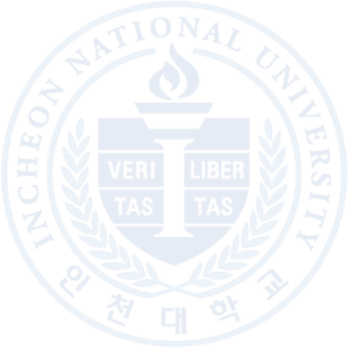

인천대학교가 세계적인 연구 중심 대학으로 도약할 수 있도록 연구에 몰입할 수 있는 환경을 조성하고,
연구자의 성장을 위한 동반자가 되겠습니다.
안녕하십니까. 연구처장 황병희입니다.
국립인천대학교의 연구처를 맡게 되어 무한한 책임감과 함께 큰 영광으로 생각합니다.
급변하는 국내외 연구 환경과 동향 속에서, 우리 대학이 더 높은 연구 경쟁력을 확보하고 지속적으로 성장할 수 있는 환경 조성을 위해 최선을 다하겠습니다.
첫째, 연구에 몰입할 수 있는 환경 조성에 주력하겠습니다.
연구자 여러분이 행정적 부담에서 벗어나 순수하게 연구에만 집중할 수 있도록 지원 시스템을 개선하고, 우수한 연구자가 연구에 몰입할 수 있는
환경 조성에 힘쓰겠습니다.
둘째, 대형 국책과제 및 산학협력 과제 수주를 적극 지원하겠습니다.
국내외 연구비 확보를 위한 대학 지원에 집중하겠습니다.
연구자 간 정보 공유와 컨설팅을 강화하고, 연구 기획 단계부터 맞춤형 지원을 통해 과제 성공률을 높이겠습니다.
협력 네트워크를 확대하여 실용적 연구 기회를 넓히겠습니다.
셋째, 우수 연구 성과 창출과 확산을 위해 노력하겠습니다.
세계적 수준의 학술지 게재를 통한 과제 수주 경쟁력을 높이고, 원천 특허 출원을 통한 새로운 가치창출을 위해 노력하겠습니다.
더불어 연구 성과의 사회적 확산과 공유를 통해 대학의 사회적 책임을 다하겠습니다.
연구처는 언제나 여러분의 연구 활동을 지원하는 동반자가 되고자 합니다.
여러분의 소중한 의견과 제안을 경청하며, 연구자 중심의 행정 서비스를 제공하겠습니다.
우리 대학이 세계적인 연구 중심 대학으로 도약할 수 있도록 구성원 모두의 적극적인 참여와 협조를 부탁드립니다.
함께 꿈꾸고, 함께 도전하며, 함께 성취하는 연구 공동체를 만들어 나가겠습니다. 감사합니다.
2025년 5월 인천대학교 연구처장 황병희
